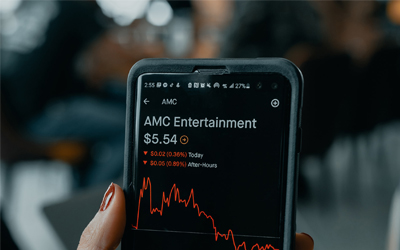

social stock
Social media's influence on financial markets
1. The Rise of WallStreetBets
Retail investors attempt to coordinate on Reddit to drive up the share price of struggling companies.
View

2. Meme Investing
With millions of individuals confined at home, social media amplified the retail trading surge.
View
3. Crypto Mania
Altcoins saturate the market and social media as retail investors search for the "next" Bitcoin.
View